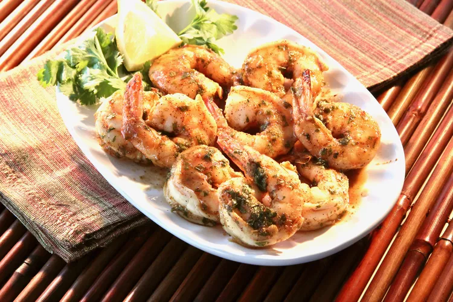

Spicy Baked Shrimp

Yummy! I think?
Isn't this copyright infringment??? Don't sue me, please!
- Whisk olive oil, Cajun seasoning, lemon juice, parsley, honey, soy sauce, and cayenne pepper together in a large glass or ceramic bowl. Add shrimp and toss to evenly coat. Cover the bowl with plastic wrap and marinate in the refrigerator for 1 hour.
- Preheat the oven to 450 degrees F (230 degrees C). Spray a baking dish with cooking spray.
- Transfer shrimp into the prepared baking dish and pour any remaining marinade over top.
- Bake in the preheated oven until shrimp are bright pink on the outside and the meat is opaque, about 10 minutes.